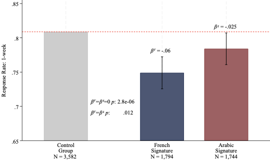

Do School Bureaucrats Discriminate against Foreigners? Experimental Evidence from Italy
MSc thesis, University of Bologna
I study whether public Italian schools discriminate against foreigners. Within province, I contact each school inquiring about enrollment procedures and welfare with either an Italian, French, or Arabic alias. I show that clerks are 5.32% less likely to answer if the sender is a foreigner. Moreover, lower income per capita increases bias: 10% of schools show biases ≥ 11%. When bureaucrats do respond, they are 17.6% less likely to send informative answers and 4.77% less likely to be polite. These results contradict the widely recognized theories of statistical discrimination and contact theory, at least in this setting. Economic theories of taste-based discrimination, jointly with psychological theories that postulate bias against outer groups depends on the feelings that group causes, are able to explain the observed discrimination.